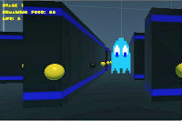

<!-- About Section -->
    <section class="success" id="personal">
        <div class="container">
            <div class="row">
                <div class="col-lg-12 text-center">
                    <h2>Personal</h2>
                    <hr class="star-light">
                </div>
            </div>
            <div class="row">
                <div style="float:right; width:250px">
                    
                    
                </div>
                <ul>
                    <li><p>Attended the Great Uni Hack in April 2015, in which
                    me and my team developed a <a href="http://challengepost.com/software/pacman-revisited"
                    style="color:blue">
                    3D Pacman game</a>.</p></li>
                    <li><p>Worked on various personal projects, some which can
                    be found in my portfolio.</p></li>
                    <li><p>I greatly enjoy running recreationally and attended
                    the Great Manchester 10K runs in 2013 and 2014 respectively,
                    rasing money for the War Child charity.</p></li>
                </ul>
            </div>
        </div>
    </section>
